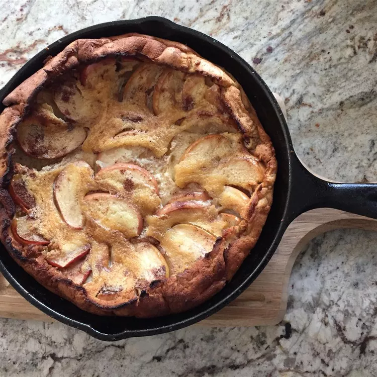

Apple Oven Pancake

Part pancake, part popover, it puffs up high around the edges when it’s done. Serve it quickly before it sinks.
2 tbspunsalted butter2 tbsppacked brown sugar¼ tspground cinnamon1 cupthinly sliced peeled baking apples (1 medium)2eggs½ cup (65g)all-purpose flour½ cupwhole milk¼ tspsalt- Lemon juice and powdered sugar, if desired
Heat oven to 400°F. In a 10-inch cast-iron skillet, melt the butter in the oven; brush butter over bottom and side of skillet. Sprinkle 1 tbsp brown sugar and cinnamon over the melted butter; arrange apples over sugar and sprinkle the remaining 1 tbsp brown sugar over the apples.
In a medium bowl, beat eggs slightly with whisk. Stir in flour, milk and salt just until flour is moistened (do not overbeat or pancake may not puff). Pour into skilled over the apples.
Bake 30 to 35 minutes or until puffy and deep golden brown. Serve immediately, sprinkled with lemon juice and powdered sugar.